- Top Hat: Q1, Q2, Q3
Stellar evolution
The solution to the great-debate on the age of the Sun/Earth was that there needs to be an energy source to compensate for the energy losses in the form of the luminosity \(L\). Stars don't shine because they burn! They burn because they shine!
Since \(L\) constantly causes removal of energy, some must be extracted from somewhere to compensate if the system is in equilibrium. But that means something is consumed: the stars must evolve!
It turns out the energy source is the nuclear energy that binds neutrons and protons in nuclei in the core of the star, but that evolution would be needed became clear even before nuclear fusion became the apparent energy source. This has profound implication: stars must be born and they can die (cf. millennia of human history elevating the Sun to god-like status!).
Stellar evolution is a constant battle between the gas and gravity. Gravitational contraction releases energy and heats up the gas. If in the battle the gas heats up sufficiently to release its own energy, it can momentarily delay the gravitational collapse at the expenses of the energy source, and we get a star. See for a more in depth description from ASTR545.
How can we study stellar evolution
Clearly, stars are overall pretty stable: they don't change on a nightly basis. So their evolution must be very slow compared to human lifetimes! How can we study something too slow to observe, and which is determined by processes happening in the interior of the star that we cannot see?
Populations: the slower the evolutionary phase, the more stars we see in that phase (like a bottleneck: most cars are where traffic is slow). Astrophysics compensates lack of control over the experiment with very large sample that allow to build statistical samples.
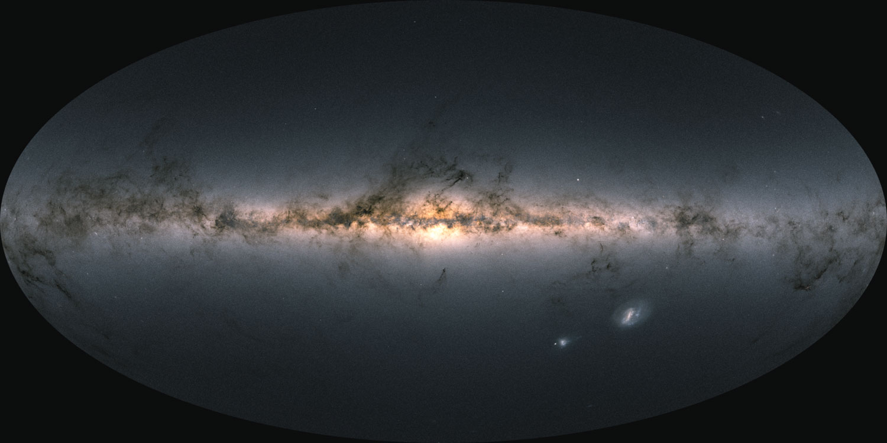
Figure 1: Stellar populations can be selected based on location (e.g., a whole Galaxy), or observational properties (e.g., all the stars bluer than some threshold). Controlling selection biases (as in "what fraction of what is out there can your experiment detect?") is often crucial to analyze the data. Simulations: we can tell a computer the physics that governs certain phenomena and obtain a numerical model of, for example, a star. Through computer simulations we can access (a representation of) the internal structure of a star, and fast-forward time to study its evolution.
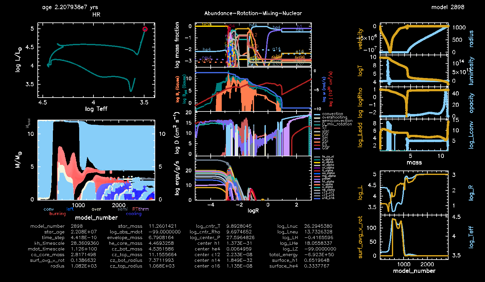
Figure 2: Example of graphical output with many plots showing the interior and the past evolution of a stellar model computed with MESA. - In selected cases: neutrinos come straight from the core!
- Asteroseismology: if we can detect fluctuation in the light of a star due to star quakes, we can infer directly something about its interior.
Option 2 is what I do, through a variety of numerical tools. These require combining models of several physical processes (atomic physics, radiative processes, nuclear reactions, hydrodynamics), and are therefore very simplified. Currently and for the foreseeable future simulations of stars will be spherically symmetric: anything else is way too expensive!
Because simulations are based on a numerical approximation of a physical model of what nature does, they are necessarily "wrong" at some level (Nature does not need to write down the equation and teach a computer how to do things!). By comparing observations with simulations, we can learn about things we cannot directly see.
This is why the color-magnitude diagram/Hertzsprung-Russell diagram is a powerful tool: we can simulate the evolution of a star (in terms of its \(L\) and \(T_{\rm eff}\) as a function of time), and compare of populations of stars we can observe. This particular diagram allows to combine and compare empirical data with theoretical predictions!
Star formation
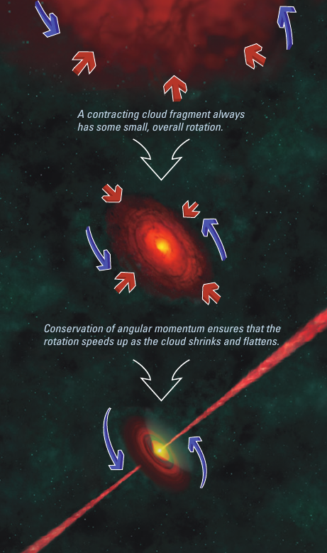
Recall planet formation and nebular hypothesis: the same cloud that started collapsing and globally rotate (on a plane perpendicular to the total angular momentum, because particles of dust and gas can "coordinate"), also forms the star (possibly more than one for a binary/triple!)
A "baby star" will still have its disk around, and the accretion requires matter to fall on the center releasing gravitational potential energy. This energy can power outflows: baby stars, much like baby humans are messy eaters! They can have jets which we can observe for example through radio-astronomy.
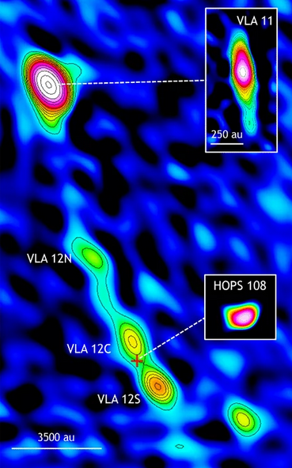
Often all this is happening "embedded" in dust clouds that enshroud the stars.
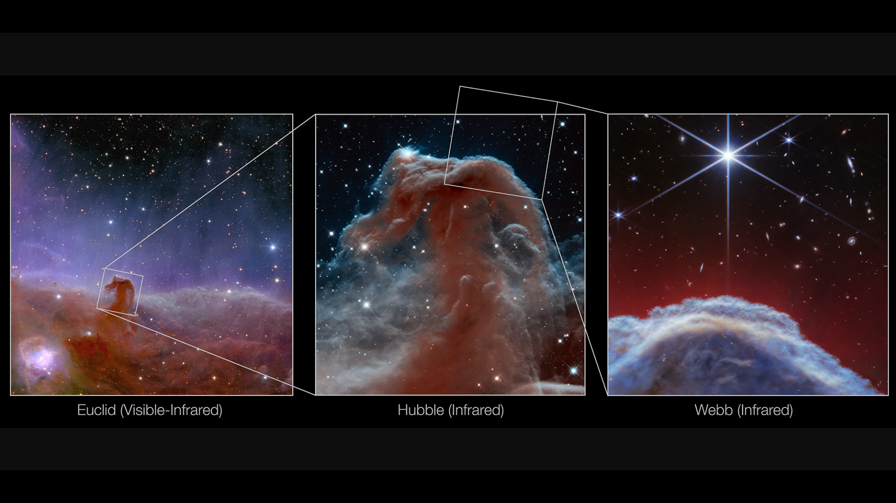
From the collapse of a single cloud (and the \(T\) increase caused by the collapse), fragmentation of the cloud typically leads to the formation of many stars: they are born in groups called clusters
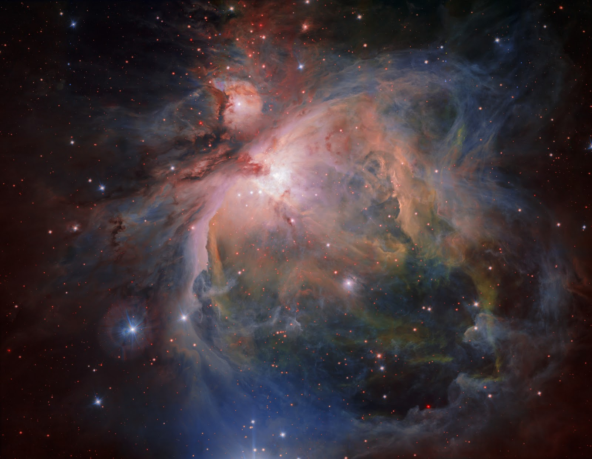
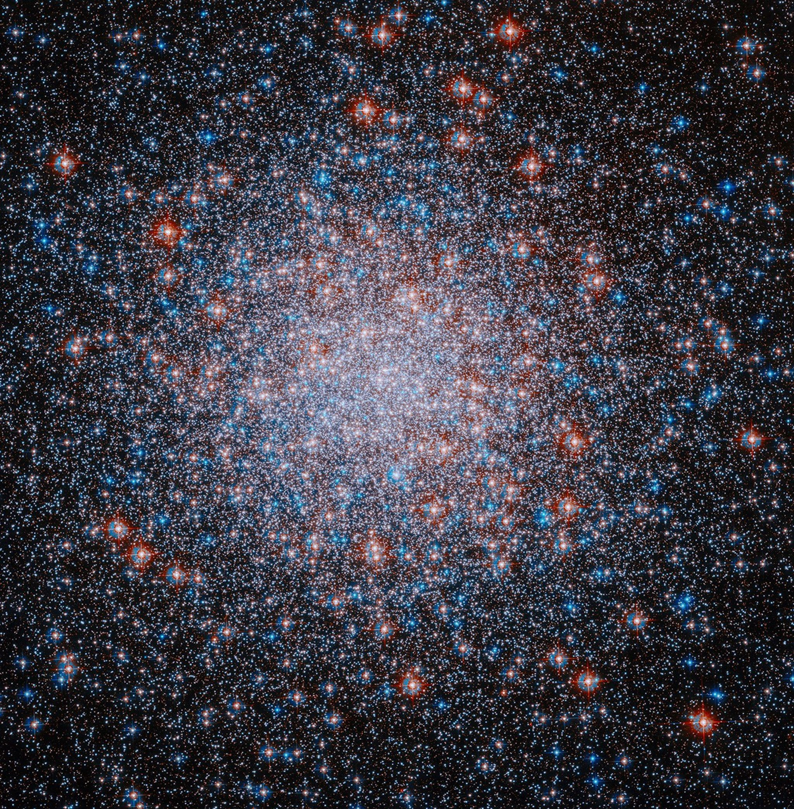
Initial mass function
In general, a galaxy will form stars with a certain distribution in initial mass and at a certain (possibly variable) rate in time: there is a star formation rate function \(SFR\equiv SFR(M, t)\). Edwin Salpeter in the 1950s proposed a factorization of this function:
that is write the star formation rate as the product of a function only of the mass (the "initial mass function" or IMF) and the star formation history. This is a big and a priori physically unjustified hypothesis that greatly simplifies the math (no cross terms!). It stays that the history of how you form stars does not depend on which stars you have formed first, while in reality stars with their light, stellar winds, and as we will see, violent deaths, do shape significantly their environments. However, this heuristic hypothesis (which means: just a guess to see where it goes) has proven extremely successful.
Wherever we look, the \(IMF(M)\) seems almost universal, and the reason is still unclear and depends likely on the complex physics of large quantities of plasma falling on itself, and how the energy this liberates feeds back on the flow (the star formation problem).
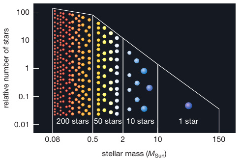
Lowest mass limit
The lowest mass limit for a star is \(\sim0.08M_{☉}\), determined by when the gas can win over gravity without turning on any energy generation by nuclear fusion: this never works with a classical gas that heats up as it is compressed by gravity. Something must change the relationship between \(P\) and \(T\) for the gas, and this something is a quantum mechanical effect: electron degeneracy.
We have encountered electrons already, but there is a property we have not discussed yet. Electrons are fermions, this means they are particles that cannot occupy the same energy level: like two people don't sit on the same chair normally, two electrons cannot occupy the same energy spot.
As gas is compressed to very high densities, this effects start to matter: electrons start providing more pressure than if they were a classical gas, and if the star is not too massive, it's core is cold enough for this effect to kick in and win over gravity.
At the lowest boundary between stars and objects where electron-degeneracy pressure is sufficient to stop gravity we find Brown Dwarfs: these are just big enough to do some secondary burning (e.g., of deuterium) but not to ignite hydrogen burning reactions and become a star.
Highest mass limit: is there one?
You will find on many textbooks that for sufficiently large mass \(M\ge100-150\,M_{☉}\) the luminosity of the star \(L\propto M^{x}\) with \(x\ge1\) becomes so large that the photon pressure on the gas tears them apart: gas not only would win over gravity by preventing collapse but even reverting it!
This however is an oversimplified picture: in the Universe we see stars more massive than this! While these may be stellar mergers in binaries, so not at their "original" mass, there are many radiative phenomena that can prevent the photons from destroying a star, first and foremost "asymmetries".
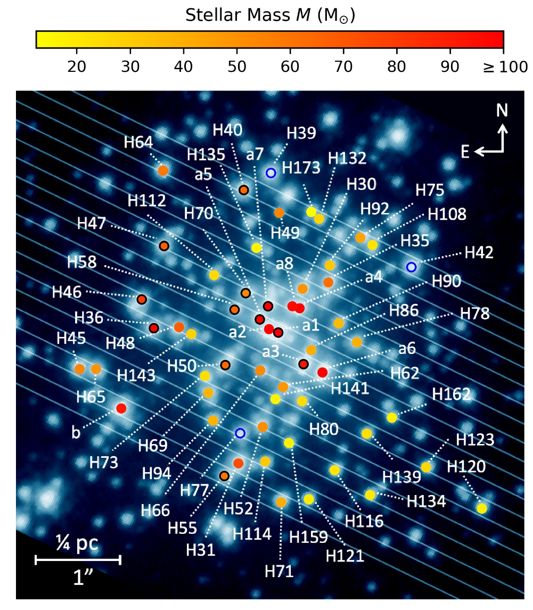
Gravitational wave detections of very massive black holes exceeding \(100\,M_{☉}\) also suggests the upper limit for stellar mass is higher than a naive calculation may suggest. This limit thus remains debated.
Main sequence evolution
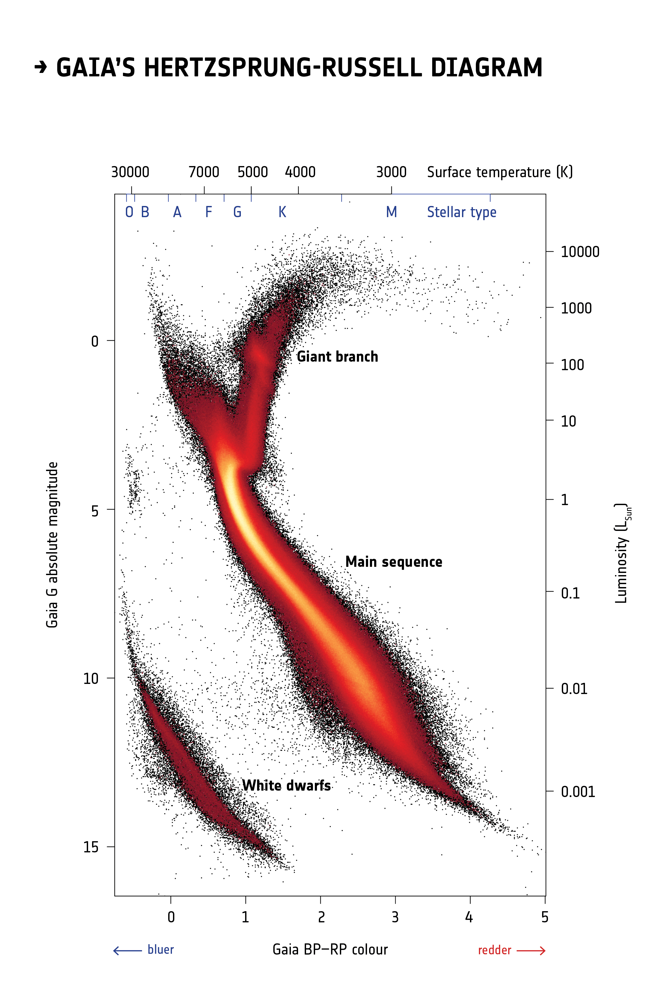
The majority of stars follow a line on a color-magnitude diagram. We can now interpret this as a group picture of stars: most are in the longest and slowest evolutionary phase.
Let's do an anti-historical step (I recommend "The life of Stars" by G. Shaviv for the history of the development of these ideas) and let's assume we already know the energy source of stars. This is not too bad: the paper proposing nuclear fusion as the energy source in the Sun is Bethe 1939, and much of the evolution that we are going to discuss became clear only through the advent of computational sciences and the collection of large populations later on. The description of stellar evolution we will discuss is mostly empirically validated by collecting multiple independent observational constraints that have to fit together in a concordance picture. Moreover, the detection of solar neutrinos uncontroversially proves directly that fusion reactions do occur in the Sun.
This must mean that on the main sequence stars must be burning the best fuel, that can be burned at a slower rate for compensating the given luminosity \(L\).
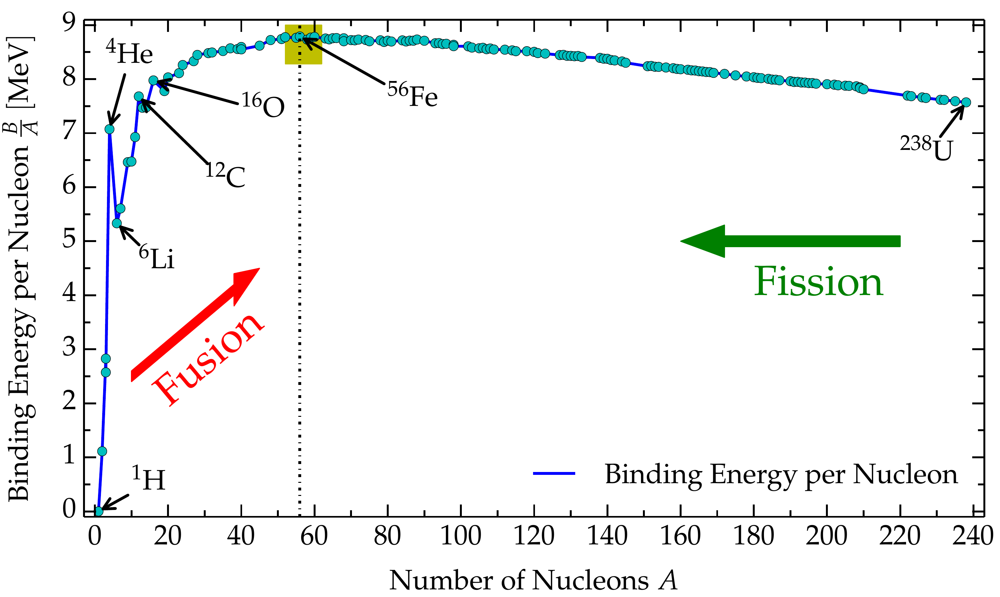
During the main sequence stars burn hydrogen into helium. Not only this gives the best yield per proton/neutron invested in a reaction (largest \(\Delta y\) on the plot above), but stars are made mostly (∼70%) of hydrogen, as we know thanks to the insight of Cecilia Payne-Gaposhkin that spectral line strength correlates with electron population and not mass abundance. This explains why 90% of stars are found in this phase, which lasts 90% of a stars life!
Nuclear reactions however are not throughout the entire star: the there is a structure (pressure gradient) needed to support the star against gravity. For a plasma the pressure \(P\equiv P(T,\rho)\) is a function of the temperature and density! To a pressure gradient corresponds a temperature gradient: only the core is sufficiently hot to burn.
[./images/TRho.png]
The Sun is roughly half-way through its hydrogen fuel, at the age of \(\sim 4.5\) billion years. It is in this sense a "middle-age star"
Mass determines the structure and thus the evolution
We know through the study of stellar binaries (two stars orbiting each other according to Kepler's laws) that the mass \(M\) of a star determines where on the main sequence it sits, specifically there is a mass-luminosity empirical relation. It is maybe not surprising that for an object that is self-gravitating mass is important.
More massive stars are more luminous: therefore they need to burn to produce a higher amount of energy \(L_{\rm nuc}=L\propto M^{x}\) with \(x>0\).
This is because burning is a consequence of the energy losses. The energy losses through \(L\) are inevitable whenever \(T\neq0\) (thermal radiation), and stars have the \(T\equiv T(r)\) structure they have to support themselves. In a star, \(T(r=0)\) in the center is hot enough that nuclear reactions can occur (and \(T=T_{\rm eff}=T(r\simeq R_{\star})\) shines in the optical spectrum). Therefore the nuclear burning is self-regulated, and the star compresses just enough to produce just \(L_{\rm nuc}=L\), which is determined by its mass \(M\), and not the nuclear processes in the core.
Because \(x>1\), even if massive stars have more fuel, they burn through it faster: we only see them young re are very few old massive stars. The fact that they are short-lived (for stellar standards, we are still talking 10-100s of millions of years) also explains partially why they are rare. The other part of the explanation is that stars are so messy as proto-stars accreting from the proto-stellar disk that it's very rare for a star to become very massive.
As the energy source runs out, gravity takes over again in the fight with gas. The stellar core slowly contracts, which can cause further energy sources to turn on as the gas re-arranges. The specifics are governed by the mass of a star, which has already been setting its luminosity and burning rate, and thus sets how much and where the exhausted nuclear fuel (helium rich gas) is.
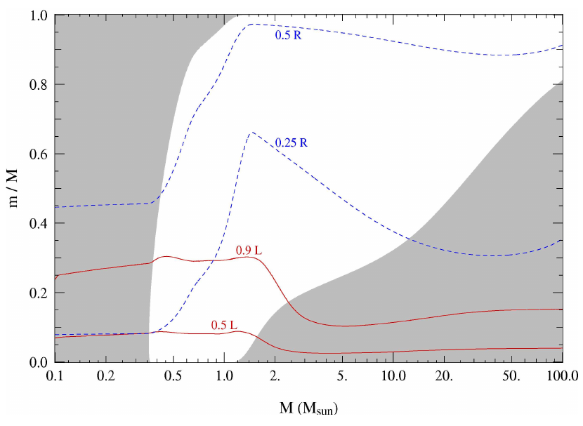
Very low mass stars \(\lessim 0.4M_{☉}\) are low \(L\) and cold (cf. CMD diagram). They still retain gas in molecular form, and it's hard for thermal radiation to come out (matter is opaque): very low mass stars are fully convective.
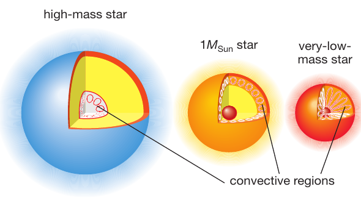
Recall that convection is heat transport through bulk motion of matter: if the whole star is convective, the burning region is constantly refilled! They have low \(L\), so they burn slowly, and convection refills them (plus they are easy to form): low mass stars are numerous!
Low mass stars similar to the Sun instead become hot enough that convection retreats in the outermost (colder and opaque) layers: the core becomes radiative and thermal energy is transported by photons. Sun-like stars have radiative cores and convective enveloped.
N.B.: This does not mean it's transparent. It may take ∼ 106 years for a single photon to make its way from the center of the Sun to the surface (neglecting the fact it's likely going to be absorbed and re-emitted, making the "single photon" idea questionable)
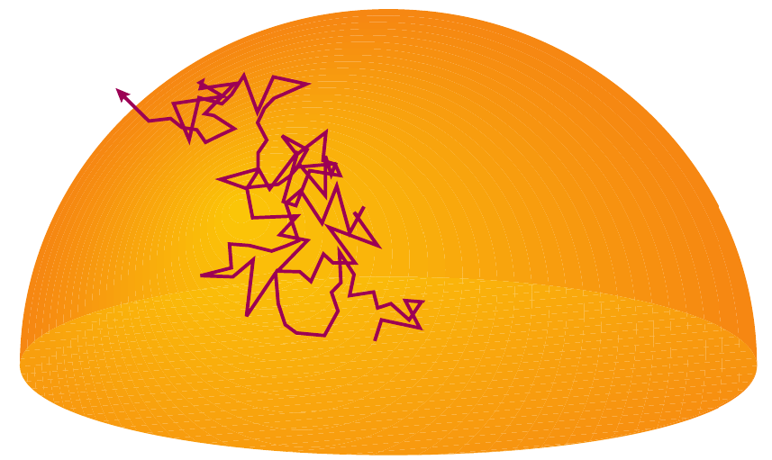
As mass increases, so does \(L\), so does the weight to support and thus the steepness of the \(P\) gradient needed. All these things results in hotter central temperatures where hydrogen fusion occurs differently than in the Sun: the gas finds the most efficient way to generate energy to compensate \(L\) and support itself against gravity!
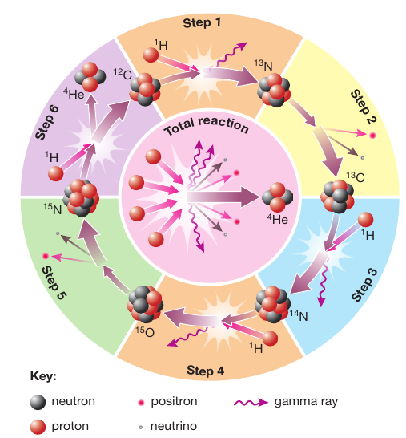
The trick is to use elements other than hydrogen and helium to catalyze the nuclear reaction. The overall result is still \(4\mathrm{H}\rightarrow^{4}\mathrm{He}+2e^{+}+2\nu_{e}\), but the intermediate steps bypass the bottlenecks of the pp-chain we have seen by sticking protons onto carbon and oxygen (temporarily making nitrogen), and ultimately spit back out the origina CNO elements and helium (CNO cycle). This results in a larger energy generation: the radiation in the core becomes again insufficient to carry the energy and convection occurs. Meanwhile, their position on the color magnitude diagram makes them hot enough to be rather low opacity. Massive stars have convective cores and radiative envelopes.
The subsequent evolution continues to be determined by the fight between the gas (producing energy as best it can to slow down the collapse refueling against \(L\)) and gravity.
Before we start unpacking the post-main-sequence evolution of stars, note how stellar evolution is driven by the fight between gravity and gas pressure gradient, which causes the nuclear burning that has two main effects:
- delay the collapse by releasing just the right amount of energy to compensate for the surface losses
- change the chemical composition.
The famous sentence by Carl Sagan that we are made of star stuff means this: all the nuclei in the atoms and molecules of your body that are not hydrogen or helium (made at the big bang) have been produced in stars (or in their explosions for stuff heavier than the most bound nuclei, iron and nickel)!
Stars act as nature's thermonuclear gravitational confinement reactors that process light nuclei into heavier nuclei before releasing them in the host galaxy!
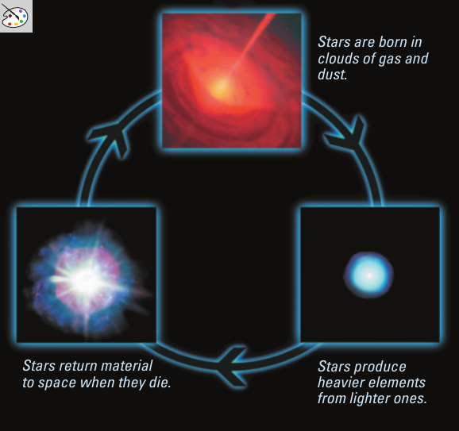
Very low mass star evolution
For \(M\lesssim 0.4M_{☉}\), fully convective low-\(L\) stars take longer than the current age of the Universe to run out of H: their evolution is only main sequence evolution, none of these have exhausted their fuel.
As they evolve, the slow change in chemical composition reflects in changes in their structure, which causes their \(L\) to slowly increase.
Low mass star evolution
The video above shows a MESA simulation of a \(1\,M_{☉}\) stellar model. N.B.: This is a model of a \(1\,M_{☉}\) star, not the real Sun: modeling assumption can cause differences between the model and the Sun, for instance it's \(L\) at present-day for the age of the Sun is a few percent off. Remember that all models are wrong, but some are useful!
Main sequence
Throughout the main sequence, the luminosity of the Sun increases: the Sun used to be fainter! This for example implies that the habitable zone determined by the stellar flux on a planet surface has moved: when the Sun was fainter early in the evolution, it was further in.
The increase in \(L\) is caused by the fact that the composition of the star is changing (specifically, the average weight of a particle is changing, since the mass is roughly constant, neglecting solar wind and nuclear-mass-energy converted into thermal energy by the burning).
Red giants: degenerate He core, H shell, expanded envelope
At the end of the main sequence, the Sun will have depleted H only in the very center (recall Sun-like stars have radiative cores).
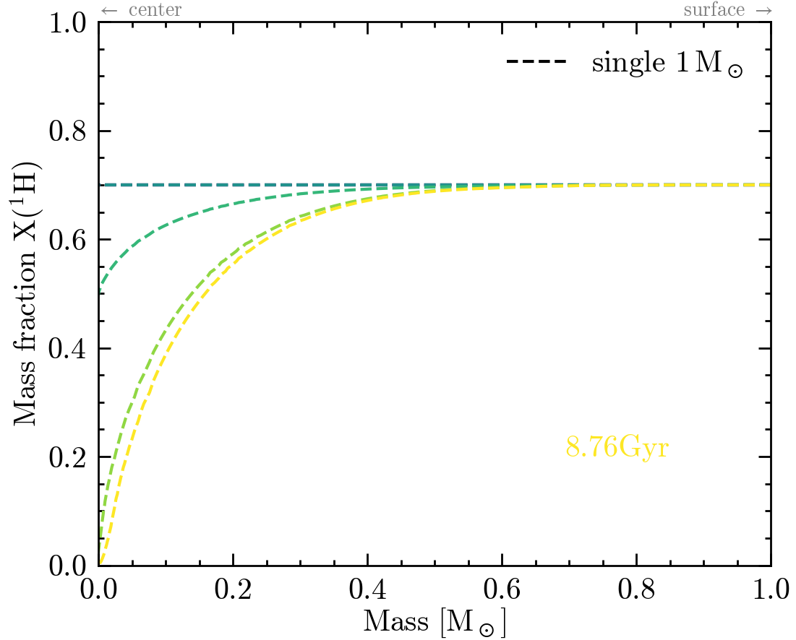
MESA model across its main sequence evolution. The color go from dark (∼ ZAMS) to light (∼ TAMS).Because the mass is relatively low, the core temperature is also relatively low: \(e^{-}\) degeneracy pressure matters! The He-rich core will be temporarily sustained by it, while the first layer where H is available burns in a shell that only sustains the envelope.
Because the shell position is determined by the composition structure (set by the main sequence structure, set by the \(L\equiv L(M)\)), that is by the availability of fuel, its burning is not self-regulated like the core burning during the main sequence. The nuclear processes occur at whatever rate is set by the temperature (\(\Rightarrow\) thermal motion of nuclei in the plasma) at the location where fuel is dictated by the stellar structure. The envelope responds to this by expanding: the star becomes a red giant.
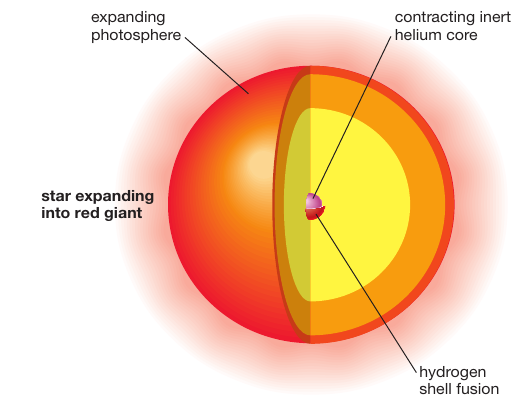
During the red-giant phase the luminosity is mostly due to:
- slow gravitational contraction of the inert core
- \(L_{\rm nuc}\) from the H shell, set by the \(T\) at the outer edge of the core, also dependent on the core structure.
In other words, the core determines the luminosity (while in the main sequence the structure and the luminosity where set by the ease of escape of thermal energy in the form of radiation, so mostly in the envelope).
Therefore, as a Sun-like star ends the main sequence, it will smoothly transition to burn H in a shell, with an inert core sustained by degeneracy pressure.
The empirical validation of this prediction can be found in the color-magnitude diagrams of clusters, where very bright stars are always redder (besides being at most ∼ 10% of the cluster population).
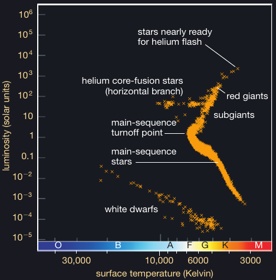
During this phase the Sun will expand by \(\sim 100\times\) and the photosphere will almost (but not quite) reach the Earth's orbit, Mercury and Venus will likely be swallowed. Don't worry, we still have ∼ 5.5 billion years of fuel left in the Sun.
Next fuel is hard to start: He Flash
3α reaction
Based on nuclear physics and particle physics experiments, we know that there aren't many stable nuclei between helium and \(A\ge8\): He is hard to burn because there aren't many catalyst the star can leverage as intermediate steps to bypass the electromagnetic repulsion between nuclei.
N.B.: This is often referred to as \(3\alpha\) channel, because 3 helium nuclei (aka \(\alpha\) particles) meet through the intermediary of making a temporary \(^{8}\mathrm{Be}\) to form carbon.
The next nuclear fuel has to be He:
- the core is now mostly made of it (70% of H was converted to He, and ∼25% already was)
- it's the next best fuel in terms of energy release per nucleon
N.B.: These will be true regardless of the mass of the star considered.
This was a problem for a long time: Fred Hoyle used the existence of evolved (post-main-sequence) stars to predict the existence of nuclear energy levels in nuclei to enable He burning. The idea is that you typically do \(^{4}\mathrm{He}+^{4}\mathrm{He}\rightarrow^{8}\mathrm{Be}\), but the latter immediately decays with a very short half-life. But if \(T\) is high enough, before \(^{8}\mathrm{Be}\) can decay it will encounter another \(^{4}\mathrm{He}\) and make an excited nucleus of \(^{12}\mathrm{C}\) which then decays into stable \(^{12}\mathrm{C}\). Hoyle used stars to deduct the out-of-equilibrium nuclear structure of carbon nuclei!
Tip of the red giant branch
The movie below shows a calculation by M. Cantiello of this phase: in the early stellar evolution calculations this was the hardest problem, and held the community back for about a decade.
The structure of a red giant described above can only be temporary: the He core is only sustained by degeneracy pressure, but the H shell is adding its hashes to its mass. As the core mass grows, it's temperature grows. As temperature grows, the electrons in the plasma of the core can more easily jump to higher energy levels, and the Pauli exclusion principle doesn't apply anymore (because more energy levels are available: it's like there are more seats in the venue and electrons don't need to fight each other for a spot!).
This will lead to a big problem: as the electrons degeneracy pressure decreases the core will be out of hydrostatic balance, and an explosion, called He flash will ensue.
Because the breaking of hydrostatic balance always occurs at a specific \(T\), corresponding to a specific mass of the core, and as we saw above, the core determines the \(L\) of a red giant.
Therefore, all red giants ignite He at the same core mass meaning same luminosity. This is the luminosity at the tip of the red giant branch. The fact that it's a standard value allows for use of this luminosity as distance indicator for cosmology applications: measure the brightness \(B\), know \(L\), infer the distance \(r\).
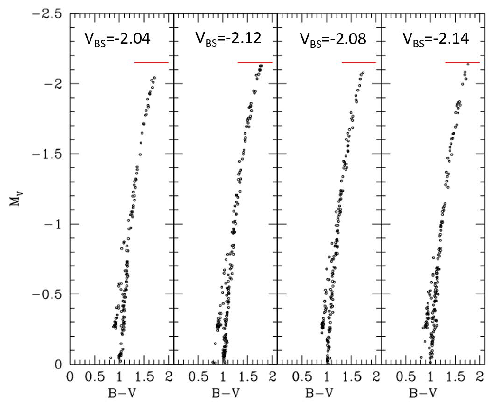
Horizontal branch
But if all red giants at the ignition of the next fuel have the same core, and they had different initial masses, this means at the ignition of He, they have different envelopes!
The less envelope is left by the time the He core has reached its threshold mass, the larger fraction of the star is turned into core material, the hotter the star is. But the luminosity, post-He flash, now comes primarily from the energy generation in the core, and the core mass is the same, so the luminosity is the same: in a population of roughly co-eval stars such as a cluster, we find a line at constant luminosity (set by the core mass) and varying \(T_{\rm eff}\) (the lower the envelope mass the higher \(T_{\rm eff}\)), see the color-magnitude diagram of M4 above, or Ω Centauri in the last lecture.
We now have a stellar structure with two energy sources (for one energy loss, the luminosity \(L\) at the surface). Moving from the center out:
- He core burning
- Inert He-rich layer too cold to burn (non-burning portion of the core)
- H shell burning
- H-rich envelope (whose properties are set by the core/envelope boundary location)
This remains the structure for about 9.something % of the remaining lifetime (going from ∼90% to 99% of the total life). This is consistent with the energy release by Helium burning based on nuclear structure.
Red clump
We have seen that the mass of the star sets \(L\), thus the burning rate \(L_{\rm nuc}\), and the H burning main sequence covers 90% of the lifetime. In a co-eval cluster, most stars evolved past the main sequence have roughly the same mass: they will all sit on the same spot along the horizontal branch, and form the so called "red clump".
Red clump stars and red supergiants can be distinguished by their asteroseismic properties (they are both red and big, but their structure is different, so they support different wave propagation modes).
Asymptotic Giant branch (AGB)
Once He runs out in the core, we can reason by analogy with the end of the main sequence. The composition of the core is mostly carbon (and some oxygen produced by He burning processes other than \(3\alpha\)), and if the mass of the star is not too large, this CO core will be supported by electron degeneracy pressure.
Above it, we have a He layer, and possibly still the H rich envelope. This is an asymptotic giant branch star, where the energy to compensate the losses by \(L\) comes from:
- slow gravitational contraction of the core
- H burning shell (set by He core properties)
- occasionally He shell
Thermal pulses
The He shell is in fact typically not on: the He that didn't burn during the red clump/horizontal branch phase was too cold to burn, and this is still mostly true. Therefore most of the time an AGB star has an inert CO core, surrounded by an inert He shell (both degenerate) and a H-rich shell. As the shell adds ashes, like in the He flash described above, the He layer can ignite in a flash.
This explosive energy release drives the star temporarily out of equilibrium, pushes out the envelope and turns off both the H and He shell. With no energy sources, the star then re-collapses on a slow \(\sim E/L\) timescale before the H shell re-ignites first and we return to the previous structure. What I just described is a "thermal pulse".
During this interplay of the thermal pulses, matter can mix from the intra-shell layer to the envelope, which slowly takes carbon (produced by He burning) into the envelope: composition can be used to distinguish AGB from RGB (both are red and luminous).
Planetary nebulae
These thermal pulses are also accompanied by dust formation in the outer layers and copious mass loss: AGB stars are surrounded by their messy spill overs!
The repetition of thermal pulses divided by thermal timescales ultimately removes most of the envelope, forming beautiful nebulae around old stars, called "planetary nebulae" (historical name that has nothing to do with planets).
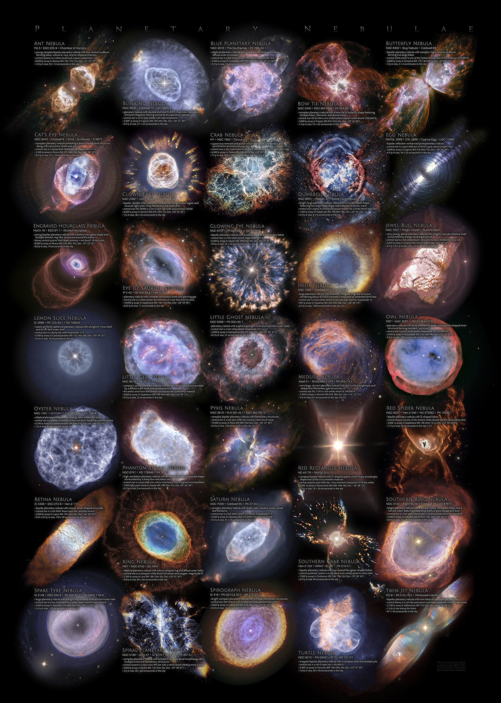
The details of the ejection of mass (and mass loss by stars in general) remain an active topic of research.
Degeneracy pressure kicks in: gas stops gravity and white dwarfs form
So after thermal pulses, our Sun-like evolved star has lost most of its envelope, and remains as a CO core possibly surrounded by a thin layer of H and He
High-mass star evolution
This video, made with this MESA setup shows an example evolution of a \(12\,M_{☉}\) mildly rotating star from formation to the end of its life.